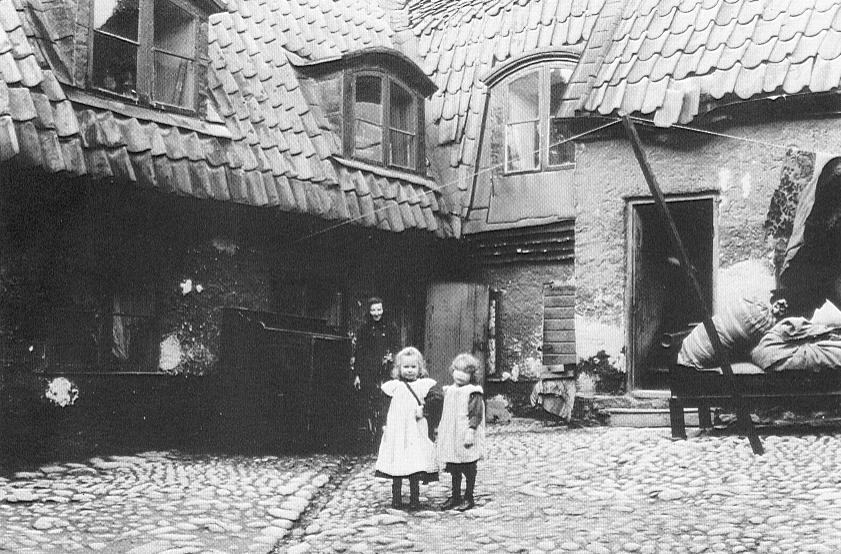

Södermalm i tid och rum

1 sömmerska (f 1866), har diversehandel i huset
1 seminarieelev (f 1878), utan anställning
1 snickaränka (f 1858) med 3 barn 1 mureriarbetare (f 1882)
1 sömmerska (f 1884) 1 järnarbetare (f 1883)
1 tunnbindare (f 1858) med hustru (f 1858) och 4 barn
1 arbetare (f 1856), utan anställning, med hushållerska (f 1851) och 3 barn
1 snickeriarbetare (f 1857), har fattigvård, med hustru (f 1855) och 4 barn
1 snickerigesällhustru (f 1831), vistas å Allmänna Försörjningsinrättningen
1 arbetare (f 1883), utan anställning
1 skomakare (f 1831), har fattigvård, med hustru (f 1838)
1 plåtslageriarbetare (f 1880), utan anställning
1 sömmerska (f 1882), utan anställning
1 renhållningskarl (f 1870) med hustru (f 1859) och 2 barn
1 agent (f 1860), utan anställning, med hustru (f 1863) och 3 barn
1 arbeterska (f 1861), har fattigvård, med 4 barn
1 smedsarbetare (f 1854)
1 hustru (f 1860) med 2 barn (mannen vistas å okänd ort sedan 1881)
1 bryggeriarbeterska (f 1863) med 2 barn
1 sömmerska (f 1855), har fattigvård, med 1 barn
1 cigarrarbeterska (f 1829)